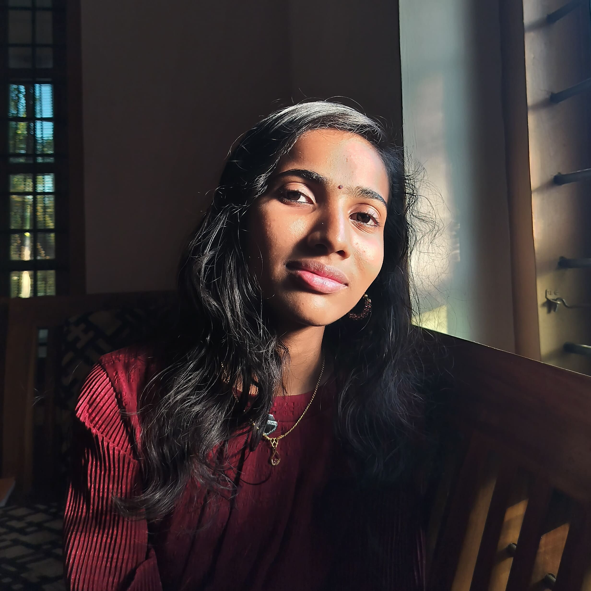

Aswathy D

Summary
Driven and cuious Computer Science and Engineering undergraduate from College of Engineering Adoor, Kerala.
Passionate about exploring innovative technologies and applying them through impactful engineering projects.
Education
- Computer Science and Engineering - College of Engineering Adoor(2022-Present)
CGPA:9.45
- Higher Secondary Education - Mar Ivanios Bethany School Kalayapuram,Kollam,Kerala(2020-2022)
Score:91.8%
Professional Experience
Cybersecurity Intern
Technovalley Software india Private Limited,Kochi,Kerala
- Conducted hands-on research and implementation of MITM attcks using packet capturing techniques with Wireshark
- Analyzed network traffic to understand vulnerabilities in unsecured communication protocols.
Quiz Club Member
IEEE Student Branch College of Engineering Adoor
- Actively contributed in oraganizng and conducting technical and general knowledge quiz.
PROJECTS
Hostel Management System
An online web application for managing the day to day administration of a hostel.
- Developed the backend using PHP and MySQL
- Developed the frontend using HTML,CSS,JavaScript,Bootstrap
Certification & Achievements
NPTEL Online Certification
Successfully completed the course on Introduction to Programming in C
Spectrum Talk
IEEE SB CEA
- Delivered an engaging and informative session on the Metaverse,covering its core concepts,underlying technologies and real-world applications.
NOXUS - AI Hands on workshop
Gained practical experience with basic AI concepts
Skills
- Technical Skills- Python,Java,C programming,HTML,CSS,JavaScript
- Key Skills - Public Speaking,Leadership & Team Management,Problem Solving,Community
Other